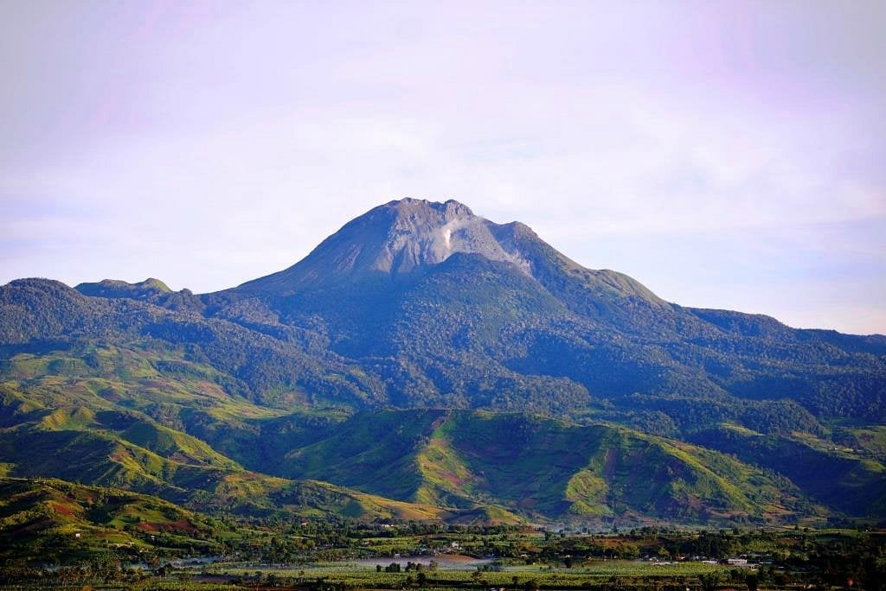

Dahilayan Adventure Park A premier destination for thrill-seekers, offering Asia's longest dual zipline among other adventure activities nestled in scenic mountains.
Communal Ranch Offering a relaxing countryside vibe with sprawling ranch lands ideal for horseback riding and outdoor picnics.
 Mount Apo A majestic volcano known for trekking and panoramic views of the Cotabato plains and Bukidnon’s landscape.
Lake Apo A peaceful crater lake surrounded by lush forest, suitable for swimming, boating, and camping.
Musuan Peak A charming farm showcasing sustainable agriculture, flowers, and farm-to-table dining experiences in Bukidnon.
Greek Hills A scenic resort and getaway place that offers a unique fusion of Bukidnon nature with Greek-inspired architecture and ambiance.
Cafe sa Bukid A cozy cafe known for its locally sourced coffee, artisan dishes, and green-filled ambiance in Bukidnon.
Pineapple field A Delmonte Pineapple Plantation in Bukidnon One of the Largest Pineapple Plantation in The World and green-filled ambiance in Bukidnon.
Alalum falls Alalum Falls, a towering cascade that was once an iconic tourist destination of Bukidnon Province, now in a state of neglect.